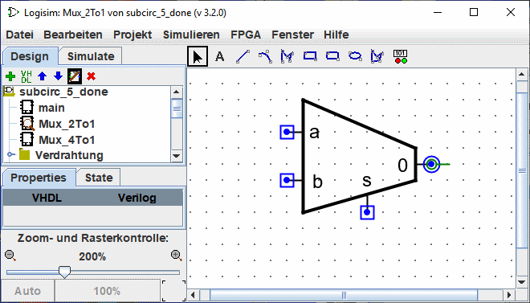
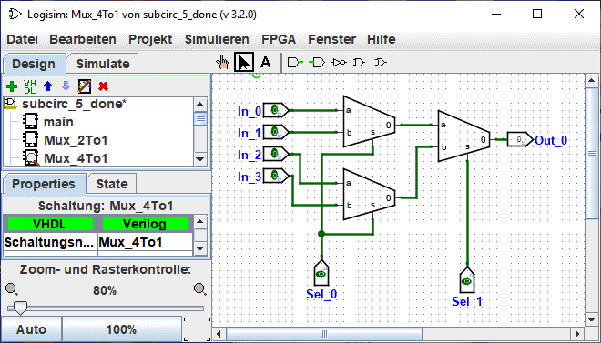
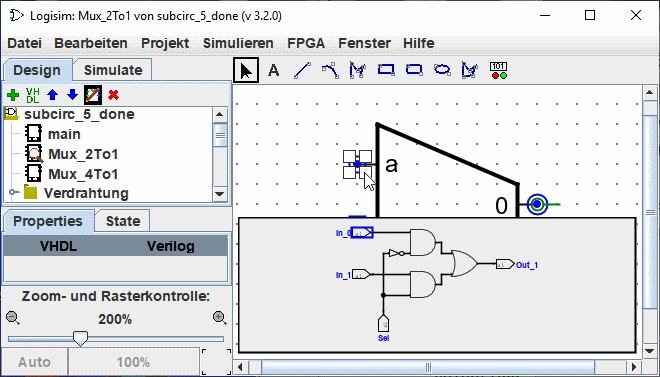

Anpassen des Erscheinungsbildes.
Das Standarddesign ist weit verbreitet und existiert in Logisim schon seit vielen Jahren ohne weitere Optionen. Wenn Sie es jedoch vorziehen, dass der Unterkreis anders gezeichnet wird, können Sie | Projkt |→| Schaltunglayout bearbeiten | wählen, und Logisims Oberfläche wechselt von der normalen Layout-Bearbeitungsoberfläche zu einer Schnittstelle zum Zeichnen des Erscheinungsbildes der Schaltung. Sie können auch auf das Symbol ganz rechts ( )
Sie können auch auf das Symbol ganz rechts in der oberen Symbolleiste des Übersichts-Fensters klicken.
)
Sie können auch auf das Symbol ganz rechts in der oberen Symbolleiste des Übersichts-Fensters klicken.
Im Folgenden bearbeiten wir das Aussehen des 2:1-Multiplexers, so dass er nicht mit einem Rechteck, sondern mit dem üblichen Trapez gezeichnet wird.

Mit dem Aussehen für den 2:1-Multiplexer wie oben gezeichnet, würde das Layout für den 4:1-Multiplexer dann wie folgt aussehen.

Der Erscheinungsbild-Editor ist wie ein traditionelles Zeichenprogramm, aber es gibt ein paar spezielle Symbole, die anzeigen, wie die Zeichnung funktioniert, wenn sie in das Layout einer Schaltung platziert wird. Diese speziellen Symbole können nicht entfernt werden.
-
Der grüne Kreis mit einer Linie, die aus ihm herauskommt, die wir den Anker (
 ) nennen. Es gibt genau einen Anker in jedem Sub-Circuit-Auftritt. Jede Komponente in einem Schaltkreis hat einen einzigen Punkt, der seine Position identifiziert; ein Benutzer sieht dies, wenn er eine neue Komponente erstellt: Der Mausklick identifiziert nur eine einzige Stelle, und die Komponente wird relativ zu dieser platziert (normalerweise mit dem primären Ausgang an der Stelle der Maus). Der Anker identifiziert die Position der Maus relativ zur Gesamtzeichnung, wenn der Teilschaltkreis erstellt wird.
) nennen. Es gibt genau einen Anker in jedem Sub-Circuit-Auftritt. Jede Komponente in einem Schaltkreis hat einen einzigen Punkt, der seine Position identifiziert; ein Benutzer sieht dies, wenn er eine neue Komponente erstellt: Der Mausklick identifiziert nur eine einzige Stelle, und die Komponente wird relativ zu dieser platziert (normalerweise mit dem primären Ausgang an der Stelle der Maus). Der Anker identifiziert die Position der Maus relativ zur Gesamtzeichnung, wenn der Teilschaltkreis erstellt wird.
Der Anker zeigt auch die Ausrichtung des Bauteils an, wenn es in die Zeichnung eingefügt wird, Sie ist das Zentrum der Rotation. Die Orientierung wird durch die Richtung der Linie angezeigt die aus dem Kreis heraus zeigen. In der Zeichnung des Unterkreis ist es möglich, die Orientierung des Ankers in den Eigenschaften zu ändern. Dies zeigt an, welche Ausrichtung das Symbol hat, wenn es auf einer Schaltung platziert wird. In unserem Beispiel ist der Anker der Mux_2to1-Unterschaltung nach Osten ausgerichtet und jede Instanz der Multiplexer-Unterschaltung ist in der Zeichnung der Mux_4to1-Unterschaltung ebenfalls nach Osten ausgerichtet.
-
Die blauen Kreise
 ) und die Quadrate mit einem Punkt (
) und die Quadrate mit einem Punkt ( ) sind die Anschlüsse des Teilkreises. Es gibt genau so viele Symbole, wie es Ein- und Ausgangspins gibt. Die Eingangsanschlüsse sind durch Quadrate und die Ausgangsanschlüsse durch Kreise gekennzeichnet. Jedes Symbol zeigt an, wie ein mit der Schaltung verbundener Draht einem Eingangs- oder Ausgangspin im Layout entspricht.
) sind die Anschlüsse des Teilkreises. Es gibt genau so viele Symbole, wie es Ein- und Ausgangspins gibt. Die Eingangsanschlüsse sind durch Quadrate und die Ausgangsanschlüsse durch Kreise gekennzeichnet. Jedes Symbol zeigt an, wie ein mit der Schaltung verbundener Draht einem Eingangs- oder Ausgangspin im Layout entspricht.
Wenn Sie eine Verbindung auswählen, zeigt Logisim den entsprechenden Pin an, indem ein Miniaturdiagramm des Layouts in einem Fenster unten rechts und der entsprechende Pin blau gezeichnet wird. Dies geschieht nicht, wenn alle Verbindungen ausgewählt sind.

Wir können den Zoom des Bildes mit einem Strg+Mausrad oder mit den Lupentasten oder dem Schieberegler unten links im Arbeitsbereich verändern. Die Rate wird angezeigt.
Die Symbolleiste enthält Werkzeuge zum Hinzufügen zusätzlicher Formen, wie unten gezeigt. Einige Tasten (Strg,Alt,Umschalt) haben einen Einfluss auf die Art und Weise, wie Formen gezeichnet werden. Diese Tasten können miteinander kombiniert werden.
Strg: Arichtet die Endpunkte auf dem Gitter aus.
Umschalttaste: Die Linien in einem Winkel von einem Vielfachen von 45° ausrichten oder die Figuren symmetrisch machen (Quadrat, gerundetes Quadrat, Kreis).
Alt: Zeichnet die Figuren aus ihrer Mitte.
Unten finden Sie eine kleine Präsentation der einzelnen Werkzeuge.

|
Auswahlwerkzeug :Symbole auswählen, verschieben, kopieren und einfügen. |

|
Text-Werkzeug : Einen Text hinzufügen, einfügen oder bearbeiten. |

|
Linie Werkzeug : Erzeugt ein Liniensegment. |

|
Kurvenwerkzeug:: Erstellt eine Bezierkurve.Das erste Klicken und Ziehen legt den Anfang der Linie fest, das zweite Klicken und Ziehen beendet die Linie und definiert die Krümmung. Ein Klick auf die Linie zeigt Ihnen die drei Kontrollpunkte an. Mit der Umschalttaste und dem Klick auf den zentralen Kontrollpunkt wird eine symmetrische Kurve aufgetragen. Mit Alt und Klick auf den Mittelpunkt wird die Kurve durch den Kontrollpunkt (unter der Maus) gezeichnet. |

|
Polylinien-Werkzeug Erzeugt eine Sequenz von verbundenen Leitungen, jeder Klick beginnt eine neue Zeile. Ein Doppelklick beendet die Sequenz. |

|
Rechteckigem Werkzeug Erstellt ein Rechteck oder Quadrat (Umschalttaste) durch Ziehen von einer Ecke in die gegenüberliegende Ecke. |

|
Rechteckigem Werkzeug Erstellt ein Rechteck oder Quadrat (Umschalttaste) mit abgerundeter Kante durch Ziehen von einer Ecke in die gegenüberliegende Ecke. |

|
Ovales Werkzeug Erstellt ein Oval oder einen Kreis (Umschalttaste), indem es von einer Ecke seines Umrisses in die gegenüberliegende Ecke gleitet. |

|
Polygonwerkzeug Erstellt ein Polygon, jeder Klick startet eine neue Seite. Ein Doppelklick beendet die Sequenz. |

|
Dynamische Komponenten Place un composant dynamique. Klick öffnet sich ein Fenster zur Auswahl von Komponenten in den Teilstromkreisen. |
Der Nächste: Fehlersuche in Teilschaltungen.